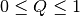

gf_mesh_get¶
Synopsis
d = gf_mesh_get(mesh M, 'dim')
np = gf_mesh_get(mesh M, 'nbpts')
nc = gf_mesh_get(mesh M, 'nbcvs')
P = gf_mesh_get(mesh M, 'pts'[, ivec PIDs])
Pid = gf_mesh_get(mesh M, 'pid')
PIDs = gf_mesh_get(mesh M, 'pid in faces', imat CVFIDs)
PIDs = gf_mesh_get(mesh M, 'pid in cvids', imat CVIDs)
PIDs = gf_mesh_get(mesh M, 'pid in regions', imat RIDs)
PIDs = gf_mesh_get(mesh M, 'pid from coords', mat PTS[, scalar radius=0])
{Pid, IDx} = gf_mesh_get(mesh M, 'pid from cvid'[, imat CVIDs])
{Pts, IDx} = gf_mesh_get(mesh M, 'pts from cvid'[, imat CVIDs])
CVid = gf_mesh_get(mesh M, 'cvid')
m = gf_mesh_get(mesh M, 'max pid')
m = gf_mesh_get(mesh M, 'max cvid')
[E,C] = gf_mesh_get(mesh M, 'edges' [, CVLST][, 'merge'])
[E,C] = gf_mesh_get(mesh M, 'curved edges', int N [, CVLST])
PIDs = gf_mesh_get(mesh M, 'orphaned pid')
CVIDs = gf_mesh_get(mesh M, 'cvid from pid', ivec PIDs[, bool share=False])
CVFIDs = gf_mesh_get(mesh M, 'faces from pid', ivec PIDs)
CVFIDs = gf_mesh_get(mesh M, 'outer faces'[, CVIDs])
CVFIDs = gf_mesh_get(mesh M, 'inner faces'[, CVIDs])
CVFIDs = gf_mesh_get(mesh M, 'outer faces with direction', vec v, scalar angle [, CVIDs])
CVFIDs = gf_mesh_get(mesh M, 'outer faces in box', vec pmin, vec pmax [, CVIDs])
CVFIDs = gf_mesh_get(mesh M, 'adjacent face', int cvid, int fid)
CVFIDs = gf_mesh_get(mesh M, 'faces from cvid'[, ivec CVIDs][, 'merge'])
[mat T] = gf_mesh_get(mesh M, 'triangulated surface', int Nrefine [,CVLIST])
N = gf_mesh_get(mesh M, 'normal of face', int cv, int f[, int nfpt])
N = gf_mesh_get(mesh M, 'normal of faces', imat CVFIDs)
Q = gf_mesh_get(mesh M, 'quality'[, ivec CVIDs])
A = gf_mesh_get(mesh M, 'convex area'[, ivec CVIDs])
A = gf_mesh_get(mesh M, 'convex radius'[, ivec CVIDs])
{S, CV2S} = gf_mesh_get(mesh M, 'cvstruct'[, ivec CVIDs])
{GT, CV2GT} = gf_mesh_get(mesh M, 'geotrans'[, ivec CVIDs])
RIDs = gf_mesh_get(mesh M, 'boundaries')
RIDs = gf_mesh_get(mesh M, 'regions')
RIDs = gf_mesh_get(mesh M, 'boundary')
CVFIDs = gf_mesh_get(mesh M, 'region', ivec RIDs)
gf_mesh_get(mesh M, 'save', string filename)
s = gf_mesh_get(mesh M, 'char')
gf_mesh_get(mesh M, 'export to vtk', string filename, ... [,'ascii'][,'quality'])
gf_mesh_get(mesh M, 'export to dx', string filename, ... [,'ascii'][,'append'][,'as',string name,[,'serie',string serie_name]][,'edges'])
gf_mesh_get(mesh M, 'export to pos', string filename[, string name])
z = gf_mesh_get(mesh M, 'memsize')
gf_mesh_get(mesh M, 'display')
Description :
General mesh inquiry function. All these functions accept also a mesh_fem argument instead of a mesh M (in that case, the mesh_fem linked mesh will be used). Note that when your mesh is recognized as a Matlab object , you can simply use “get(M, ‘dim’)” instead of “gf_mesh_get(M, ‘dim’)”.
Command list :
d = gf_mesh_get(mesh M, 'dim')
Get the dimension of the mesh (2 for a 2D mesh, etc).np = gf_mesh_get(mesh M, 'nbpts')
Get the number of points of the mesh.nc = gf_mesh_get(mesh M, 'nbcvs')
Get the number of convexes of the mesh.P = gf_mesh_get(mesh M, 'pts'[, ivec PIDs])
Return the list of point coordinates of the mesh.
Each column of the returned matrix contains the coordinates of one point. If the optional argument PIDs was given, only the points whose #id is listed in this vector are returned. Otherwise, the returned matrix will have gf_mesh_get(mesh M, ‘max_pid’) columns, which might be greater than gf_mesh_get(mesh M, ‘nbpts’) (if some points of the mesh have been destroyed and no call to gf_mesh_set(mesh M, ‘optimize structure’) have been issued). The columns corresponding to deleted points will be filled with NaN. You can use gf_mesh_get(mesh M, ‘pid’) to filter such invalid points.
Pid = gf_mesh_get(mesh M, 'pid')
Return the list of points #id of the mesh.
Note that their numbering is not supposed to be contiguous from 1 to gf_mesh_get(mesh M, ‘nbpts’), especially if some points have been removed from the mesh. You can use gf_mesh_set(mesh M, ‘optimize_structure’) to enforce a contiguous numbering. Pid is a row vector.
PIDs = gf_mesh_get(mesh M, 'pid in faces', imat CVFIDs)
Search point #id listed in CVFIDs.
CVFIDs is a two-rows matrix, the first row lists convex #ids, and the second lists face numbers. On return, PIDs is a row vector containing points #id.
PIDs = gf_mesh_get(mesh M, 'pid in cvids', imat CVIDs)
Search point #id listed in CVIDs.
PIDs is a row vector containing points #id.
PIDs = gf_mesh_get(mesh M, 'pid in regions', imat RIDs)
Search point #id listed in RIDs.
PIDs is a row vector containing points #id.
PIDs = gf_mesh_get(mesh M, 'pid from coords', mat PTS[, scalar radius=0])
Search point #id whose coordinates are listed in PTS.
PTS is an array containing a list of point coordinates. On return, PIDs is a row vector containing points #id for each point found in eps range, and -1 for those which where not found in the mesh.
{Pid, IDx} = gf_mesh_get(mesh M, 'pid from cvid'[, imat CVIDs])
Return the points attached to each convex of the mesh.
If CVIDs is omitted, all the convexes will be considered (equivalent to CVIDs = gf_mesh_get(mesh M, ‘max cvid’)). IDx is a row vector, length(IDx) = length(CVIDs)+1. Pid is a row vector containing the concatenated list of #id of points of each convex in CVIDs. Each entry of IDx is the position of the corresponding convex point list in Pid. Hence, for example, the list of #id of points of the second convex is Pid(IDx(2):IDx(3)-1).
If CVIDs contains convex #id which do not exist in the mesh, their point list will be empty.
{Pts, IDx} = gf_mesh_get(mesh M, 'pts from cvid'[, imat CVIDs])
Search point listed in CVID.
If CVIDs is omitted, all the convexes will be considered (equivalent to CVIDs = gf_mesh_get(mesh M, ‘max cvid’)). IDx is a row vector, length(IDx) = length(CVIDs)+1. Pts is a row vector containing the concatenated list of points of each convex in CVIDs. Each entry of IDx is the position of the corresponding convex point list in Pts. Hence, for example, the list of points of the second convex is Pts(:,IDx(2):IDx(3)-1).
If CVIDs contains convex #id which do not exist in the mesh, their point list will be empty.
CVid = gf_mesh_get(mesh M, 'cvid')
Return the list of all convex #id.
Note that their numbering is not supposed to be contiguous from 1 to gf_mesh_get(mesh M, ‘nbcvs’), especially if some points have been removed from the mesh. You can use gf_mesh_set(mesh M, ‘optimize_structure’) to enforce a contiguous numbering. CVid is a row vector.
m = gf_mesh_get(mesh M, 'max pid')
Return the maximum #id of all points in the mesh (see ‘max cvid’).m = gf_mesh_get(mesh M, 'max cvid')
Return the maximum #id of all convexes in the mesh (see ‘max pid’).[E,C] = gf_mesh_get(mesh M, 'edges' [, CVLST][, 'merge'])
[OBSOLETE FUNCTION! will be removed in a future release]
Return the list of edges of mesh M for the convexes listed in the row vector CVLST. E is a 2 x nb_edges matrix containing point indices. If CVLST is omitted, then the edges of all convexes are returned. If CVLST has two rows then the first row is supposed to contain convex numbers, and the second face numbers, of which the edges will be returned. If ‘merge’ is indicated, all common edges of convexes are merged in a single edge. If the optional output argument C is specified, it will contain the convex number associated with each edge.
[E,C] = gf_mesh_get(mesh M, 'curved edges', int N [, CVLST])
[OBSOLETE FUNCTION! will be removed in a future release]
More sophisticated version of gf_mesh_get(mesh M, ‘edges’) designed for curved elements. This one will return N (N>=2) points of the (curved) edges. With N==2, this is equivalent to gf_mesh_get(mesh M, ‘edges’). Since the points are no more always part of the mesh, their coordinates are returned instead of points number, in the array E which is a [ mesh_dim x 2 x nb_edges ] array. If the optional output argument C is specified, it will contain the convex number associated with each edge.
PIDs = gf_mesh_get(mesh M, 'orphaned pid')
Search point #id which are not linked to a convex.CVIDs = gf_mesh_get(mesh M, 'cvid from pid', ivec PIDs[, bool share=False])
Search convex #ids related with the point #ids given in PIDs.
If share=False, search convex whose vertex #ids are in PIDs. If share=True, search convex #ids that share the point #ids given in PIDs. CVIDs is a row vector (possibly empty).
CVFIDs = gf_mesh_get(mesh M, 'faces from pid', ivec PIDs)
Return the convex faces whose vertex #ids are in PIDs.
CVFIDs is a two-rows matrix, the first row lists convex #ids, and the second lists face numbers (local number in the convex). For a convex face to be returned, EACH of its points have to be listed in PIDs.
CVFIDs = gf_mesh_get(mesh M, 'outer faces'[, CVIDs])
Return the set of faces not shared by two elements.
The output CVFIDs is a two-rows matrix, the first row lists convex #ids, and the second one lists face numbers (local number in the convex). If CVIDs is not given, all convexes are considered, and it basically returns the mesh boundary. If CVIDs is given, it returns the boundary of the convex set whose #ids are listed in CVIDs.
CVFIDs = gf_mesh_get(mesh M, 'inner faces'[, CVIDs])
Return the set of faces shared at least by two elements in CVIDs. Each face is represented only once and is arbitrarily chosen between the two neighbour elements.CVFIDs = gf_mesh_get(mesh M, 'outer faces with direction', vec v, scalar angle [, CVIDs])
Return the set of faces not shared by two convexes and with a mean outward vector lying within an angle angle (in radians) from vector v.
The output CVFIDs is a two-rows matrix, the first row lists convex #ids, and the second one lists face numbers (local number in the convex). If CVIDs is given, it returns portion of the boundary of the convex set defined by the #ids listed in CVIDs.
CVFIDs = gf_mesh_get(mesh M, 'outer faces in box', vec pmin, vec pmax [, CVIDs])
Return the set of faces not shared by two convexes and lying within the box defined by the corner points pmin and pmax.
The output CVFIDs is a two-rows matrix, the first row lists convex #ids, and the second one lists face numbers (local number in the convex). If CVIDs is given, it returns portion of the boundary of the convex set defined by the #ids listed in CVIDs.
CVFIDs = gf_mesh_get(mesh M, 'adjacent face', int cvid, int fid)
Return convex face of the neighbour element if it exists. If the convex have more than one neighbour relativley to the face f (think to bar elements in 3D for instance), return the first face found.CVFIDs = gf_mesh_get(mesh M, 'faces from cvid'[, ivec CVIDs][, 'merge'])
Return a list of convex faces from a list of convex #id.
CVFIDs is a two-rows matrix, the first row lists convex #ids, and the second lists face numbers (local number in the convex). If CVIDs is not given, all convexes are considered. The optional argument ‘merge’ merges faces shared by the convex of CVIDs.
[mat T] = gf_mesh_get(mesh M, 'triangulated surface', int Nrefine [,CVLIST])
[DEPRECATED FUNCTION! will be removed in a future release]
Similar function to gf_mesh_get(mesh M, ‘curved edges’) : split (if necessary, i.e. if the geometric transformation if non-linear) each face into sub-triangles and return their coordinates in T (see also gf_compute(‘eval on P1 tri mesh’))
N = gf_mesh_get(mesh M, 'normal of face', int cv, int f[, int nfpt])
Evaluates the normal of convex cv, face f at the nfpt point of the face.
If nfpt is not specified, then the normal is evaluated at each geometrical node of the face.
N = gf_mesh_get(mesh M, 'normal of faces', imat CVFIDs)
Evaluates (at face centers) the normals of convexes.
CVFIDs is supposed a two-rows matrix, the first row lists convex #ids, and the second lists face numbers (local number in the convex).
Q = gf_mesh_get(mesh M, 'quality'[, ivec CVIDs])
Return an estimation of the quality of each convex ().A = gf_mesh_get(mesh M, 'convex area'[, ivec CVIDs])
Return an estimate of the area of each convex.A = gf_mesh_get(mesh M, 'convex radius'[, ivec CVIDs])
Return an estimate of the radius of each convex.{S, CV2S} = gf_mesh_get(mesh M, 'cvstruct'[, ivec CVIDs])
Return an array of the convex structures.
If CVIDs is not given, all convexes are considered. Each convex structure is listed once in S, and CV2S maps the convexes indice in CVIDs to the indice of its structure in S.
{GT, CV2GT} = gf_mesh_get(mesh M, 'geotrans'[, ivec CVIDs])
Returns an array of the geometric transformations.
See also gf_mesh_get(mesh M, ‘cvstruct’).
RIDs = gf_mesh_get(mesh M, 'boundaries')
DEPRECATED FUNCTION. Use ‘regions’ instead.RIDs = gf_mesh_get(mesh M, 'regions')
Return the list of valid regions stored in the mesh.RIDs = gf_mesh_get(mesh M, 'boundary')
DEPRECATED FUNCTION. Use ‘region’ instead.CVFIDs = gf_mesh_get(mesh M, 'region', ivec RIDs)
Return the list of convexes/faces on the regions RIDs.
CVFIDs is a two-rows matrix, the first row lists convex #ids, and the second lists face numbers (local number in the convex). (and 0 when the whole convex is in the regions).
gf_mesh_get(mesh M, 'save', string filename)
Save the mesh object to an ascii file.
This mesh can be restored with gf_mesh(‘load’, filename).
s = gf_mesh_get(mesh M, 'char')
Output a string description of the mesh.gf_mesh_get(mesh M, 'export to vtk', string filename, ... [,'ascii'][,'quality'])
Exports a mesh to a VTK file .
If ‘quality’ is specified, an estimation of the quality of each convex will be written to the file.
See also gf_mesh_fem_get(mesh_fem MF, ‘export to vtk’), gf_slice_get(slice S, ‘export to vtk’).
gf_mesh_get(mesh M, 'export to dx', string filename, ... [,'ascii'][,'append'][,'as',string name,[,'serie',string serie_name]][,'edges'])
Exports a mesh to an OpenDX file.
See also gf_mesh_fem_get(mesh_fem MF, ‘export to dx’), gf_slice_get(slice S, ‘export to dx’).
gf_mesh_get(mesh M, 'export to pos', string filename[, string name])
Exports a mesh to a POS file .
See also gf_mesh_fem_get(mesh_fem MF, ‘export to pos’), gf_slice_get(slice S, ‘export to pos’).
z = gf_mesh_get(mesh M, 'memsize')
Return the amount of memory (in bytes) used by the mesh.gf_mesh_get(mesh M, 'display')
displays a short summary for a mesh object.

前のトピックへ
次のトピックへ
Download
Main documentations
- GetFEM++ User documentation
- Python Interface
- Matlab Interface
- Scilab Interface
- Gmm++
- GetFEM++ project